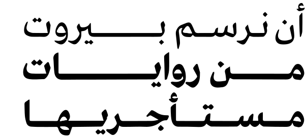

مساحةٌ بحثيةٌ تشاركيةٌ لتفعيل الحق في المدينة والسكن
تتوجّه ورش العمل إلى مجموعةٍ مختارةٍ من الشبان والشابات ممن لديهم/ن اهتمامٌ في القضايا المدينية، والبحوث، ورسم الخرائط، وكذلك روايات أحياء بيروت وتاريخها. وتتناول ورش العمل بشكل رئيسٍ إشكالية السكن في بيروت، مع التركيز على تجارب المستأجرين/ات القدامى في تأمين السكن في المدينة، والخطر المتمثّل في إخلائهم/ن.
وفي كل ورشة عملٍ، نخوض تجربةً جماعيةً في البحث الميداني وفي النقاشات التي تليه، ونتعرّف معاً عن كثبٍ الى حيٍّ من أحياء بيروت، لنفهمه من خلال روايات سكانه المستأجرين/ات، ونطّلع على تاريخه، وتشكّله، وملكيّة الأراضي فيه، وكذك المشاريع العقارية المخطّط لها في الحيّ. وتتميّز ورش العمل بأنها تعمل على تحليل جميع المواد والروايات التي سيجمعها المشاركون/ات في عملهم/ن الميداني، وتحويلها في نهاية كل ورشةٍ الى كتابٍ عن الحيّ ومستأجريه؛ كتابٌ من صنع المشاركين/ات أنفسهم/ن.
يمكن تحميل الكتاب الذي أنتجناه عن منطقة الباشورة مع المشاركين/ات في ورشة عملٍ سابقةٍ (رابط التحميل)، كما تتوفّر نسخاتٌ مطبوعةٌ منه في المانشن (مع رابط العنوان).
عن المشروع
يمثّل المشروع مبادرةً لمناقشة إمكانيات السكن في بيروت، وفهمها ضمن سياقها التاريخي والاجتماعي.
كثيراً ما وُصفت بيروت بأنها ورشة بناءٍ دائمة. فالرافعات تشكّل جزءاً من أفق المدينة، سواء على الساحل أو في قلب الأحياء السكنية. وتتكوّن هذه الورش الجديدة من أبراجٍ فاخرةٍ، تتشكّل في غالبيتها العظمى من مبانٍ سكنيةٍ راقيةٍ غير متاحةٍ إلّا لشريحةٍ صغيرةٍ من المجتمع. وكثيراً ما قيل أن "بيروت لم تعد لقاطنيها". فالسياسات المدينية القائمة على السوق والاستثمار العقاري، تسبّبت في تشكيل مستقبلٍ مدينيٍ لا يراعي القاطنين/ات في المدينة على اختلاف قدراتهم/ن المالية وتنوّع حاجاتهم/ن واهتماماتهم/ن. وأدّت هذه السياسات الى الحدّ من إمكانية السكن في بيروت، والى إخلاء العديد من الأسر منخفضة ومتوسّطة الدّخل، من البيوت والأحياء التي لطالما عاشت فيها واستمدّت سبل العيش منها.
في هذا المشروع، نركّز على تجارب المستأجرين/ات القدامى في تأمين السكن في بيروت، وعلى المحاولات المستمرة لإخلائهم/ن، سواء عن طريق قانون الإيجار الجديد، أو من خلال عمليات وضغوط السوق العقاري. فمنذ صدوره في شهر نيسان 2014، أطلق قانون الإيجار الجديد سلسلةً من النقاشات حول الحق في السكن، وكان بمثابة أداةٍ رمزيةٍ لممارسة المزيد من التهميش والعنف الاجتماعي والنفسي على المستأجرين/ات القدامى. وأشارت تقارير عدّة أن الجهات الرئيسة الفاعلة في صياغة قانون الإيجار الجديد، والمستفيدة الأولى من عمليات الإخلاء، هي حفنةٌ من المستثمرين والمطوّرين العقاريين الذين لطالما لاقوا الدعم من السلطات العامة والمحلية.
وفي ضوء الواقع المذكور، يهدف هذا المشروع إلى إعادة صياغة النقاش حول قوانين الإيجار والسكن، وطرح وجهات نظرٍ جديدةٍ انطلاقاً من مفهوم الحق في المدينة، من أجل مواجهة الضغوطات القائمة، وإيجاد مساحةٍ لمناهضة السياسات المدينية الحالية.
فمن خلال إيجاد هذه المساحة، نطمح الى إشراك الشباب/الشابات والطلاب/الطالبات من مختلف الأحياء والجامعات، في عمليات البحث والتفكير والإنتاج، بهدف تمكينهم/ن من بلورة مفاهيم العدالة المكانية والحق في السكن. وتكمن نقطة انطلاقنا في هذا المشروع، من ايماننا بأن فقدان المستأجرين/ات القدامى لسكنهم/ن من دون ضماناتٍ، هي خسارةٌ لا تقتصر عليهم/ن فحسب، بل تطال جميع سكان المدينة ومستقبلها.
بنية ورش العمل
الجلسة الأولى: إمكانية السكن في بيروت في اليوم الأول، ننظّم جلسةً حواريةً مفتوحةً عن إمكانية السكن في بيروت، من خلال تجارب المشاركين/ات أنفسهم/ن. بعدها، نطرح قضية الإيجارات القديمة في سياقها التاريخي، كما نعرّف بالحيّ الذي تتناوله ورشة العمل، وتاريخه، وسبب اختياره في سياق المشروع. وفي نهاية اليوم، نناقش مهارات البحث الميداني وأدبيّاته، تمهيداً للمرحلة الأولى من العمل الميداني.
* في خلال الأسبوع التالي، يجمع المشاركون/ات معلوماتٍ عن التشكيل السكاني والعمراني للحيّ، من خلال العمل الميداني.
الجلسة الثانية: أن نروي المدينة وسكانها يبدأ اليوم بتوليف المواد التي جمعها المشاركون/ات في خلال العمل الميداني، ومن ثم تحويلها الى خرائط. بعدها، نقدّم المرحلة التالية من الورشة، ومحورها كيفية التفكير في المدينة انطلاقاً من روايات سكانها، وكيفية رسمها أو خلق تمثيلٍ لها. وفي هذا الاطار، نناقش السؤال التالي: كيف نجري مقابلاتٍ معمّقةٍ مع بعض السكان، من شأنها نقل تجربتهم/ن في السكن في بيروت وتاريخ الحيّ الذي يسكنون فيه؟
* في خلال الأسبوع التالي، يجري المشاركون/ات مقابلاتٍ معمّقةٍ مع أشخاصٍ مختارين/ات من الحيّ ويدوّنونها.
الجلسة الثالثة: رسم خرائط وكتابات إبداعية انطلاقاً من المقابلات التي يقدّمها كل مشارك/ة في الورشة، نقوم جماعياً برسم خرائط جديدةٍ للحيّ وللقضايا التي تثيرها المقابلات، كم نعيد كتابة بعض المقابلات بشكلٍ إبداعي.
الجلسة الرابعة: صناعة الكتاب في خلال الجلسة الأخيرة، نقوم بتجميع وتوليف كامل المواد التي جرى إنتاجها في خلال ورش العمل والبحث الميداني، لنفكّر فيها من منطلق تصميم وإنتاج كتابٍ يعبّر عن الحيّ، والسكان، والقضايا التي أُثيرت، وكذلك التجربة التي خضناها معاً.
الإستمارة
(الموعد النهائي للتسجيل ٢٩ أيلول)